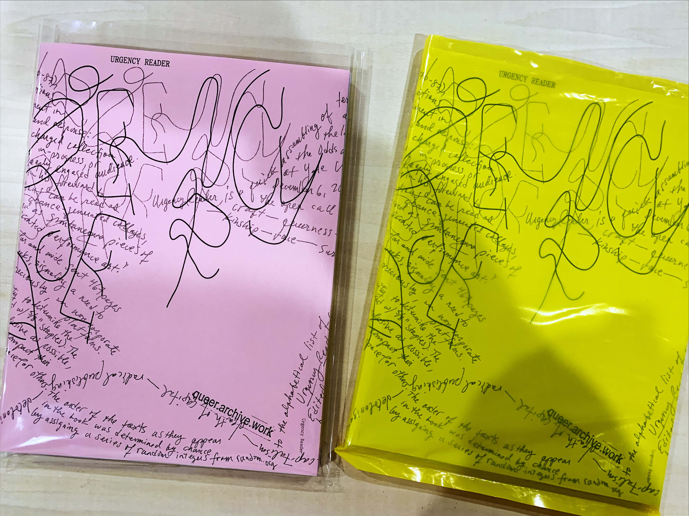
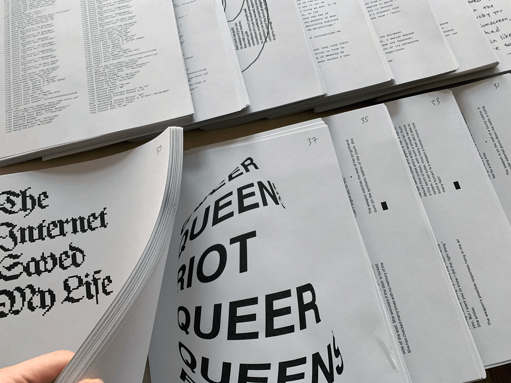
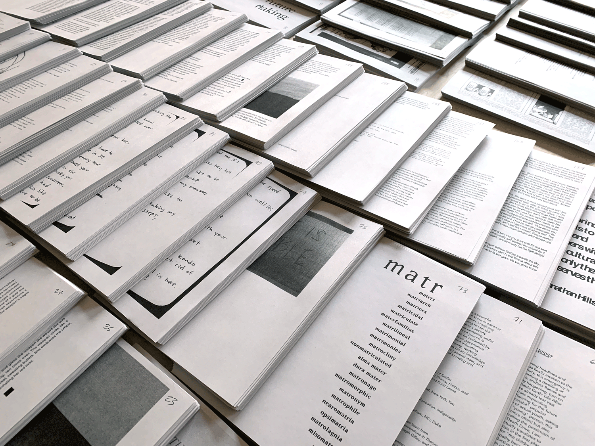

URGENCY READER (2019)

Urgency Reader is a quick assembling of texts, risograph printed in Pawtucket, RI, and bound as a book at the last minute to launch at the Odds and Ends Art Book Fair at Yale University Art Gallery on December 6, 2019. Suggested topics from the open call included ⊹urgency, ⊹craft ⊹queerness ⊹gender ⊹transformation ⊹kinship ⊹race ⊹survival ⊹post-apocalyptic practice ⊹futurity ⊹pedagogy ⊹surveillance capitalism ⊹death of capital ⊹radical publishing ⊹decolonization ⊹augmentation ⊹resistance ⊹sci-fi ⊹collective care ⊹joy
Inspired by Omnibus News #1 (1969), Assembling (1970–87), and other assembling publications, Urgency Reader is an experiment in publishing as a gesture of call and response: the quick circulation of a charged collection of texts—in some cases raw, in-progress, or sketchy—to a small but deeply engaged audience. As the poet Karl Young wrote in his foreward to Assembling #12, such publications “can be read as chance-generated collages, and as spontaneous pieces of printed performance art.”
A total of eighty contributors far and wide sent 467 pages of work in just under two weeks, signaling a need to publish urgently, but less preciously, on non-corporate platforms.


Urgency Reader in production (November 2019)
I used my stapler’s maximum capacity to determine the page count (126 sheets + cover bound with 5/8 inch staples). The goal of the edit was to be as inclusive as possible, at times asking contributors to compact their submissions in order to free up space for others. The order of the texts as they appear in the book was determined by chance by assigning a series of random integers from random.org to the alphabetical list of contributors.
Urgency Reader
252 pages + cover
Risograph printed book with black ink on Domtar Earthchoice paper
Hand-bound with 5/8 inch staples and partial wrap-around cover adhered to back page
Edition: 110 copies
Contributors and contents
- nicole killian—A CIRCULATION ON DISTRIBUTION
- Rey Carlson—PRAYER
- Kenneth Reveiz—MOP, MOPE(<)
- Joseph Imhauser—Mother Earth
- Helen Taranowski—Security Switch
- Lauren McCarthy—Reading List for Network Media, Fall 2019
- LaTefy Dolley
- Porpentine Charity Heartscape—THE MAXIMUM SOFTNESS CAPABLE OF BEING EXERTED BY ALL MACHINERY
- Ant Lobo & Anna Barlow—THIS IS A BRICK.
- Zach Deocadiz—The Internet Saved My Life
- Chris Cote—Reminders
- Juliana Castro—Instructions on winning someone’s love
- Jerome Harris—Failed attempts at busting a nut as a result of faulty communication bewteen horny strangers via text message.
- Will Kuria—Redacted from us to you. Now it’s just me and I am nothing.
- Max Evans—I am rewriting my history as a gallery
- Ritu Ghiya—devious and conniving
- Lukas Eigler-Harding—To interface
- Genevieve Flavelle—What’s queer in THE CLIMATE CRISIS?
- Nikki Juen—EXCERPT FROM CYBORG MATR
- Jason Lipeles—i mean this
- Kirslyn Schell-Smith—Virtual Reality
- Sal Randolph—Sharawadji Mix
- Anna Stein—@windowspaints
- Elaine Lopez—MyDataDownload
- Rodrigo Moreira—AABC, 2019
- Darian Razdar—NIGHTWALKERS
- June T. Sanders—All fists in a dive on the southern tear, daughter of something, FORAGIRL, IDAHO GIRL (by Abigail J. Hansel)
- Rachel Atakpa—a burning, GLITCH
- Travess Smalley—1 Number colors burn randomly: 2 The first recorded use of jade green
- Eliza Chen—Ears, Eyes, and Blood Boiling: Notes from Electronic Music Concerts
- Daedalus Li
- emma rae norton—complication of the computer mouse
- Lauren Traugott-Campbell—SQUISHY PLAY
- nicolas baird—LITTLE CREATURE
- nènè myriam konaté—koulikoro
- Bobby Joe Smith III—(UN)COMMON GROUND
- Luiza Dale—A trip into a void
- Tiger Dingsun—Dearest Salve-maker
- Mena Kamel—Have You Ever Seen a Whale
- Elite Kedan—PITCHDECK
- Kelsey Elder
- Somnath Bhatt & Rin Kim—Dialogue between me and Rin Kim
- Vuthy Lay—REFUGEE REPAIR: KHMERICANA,
- Kitt Peacock—Walter Malici and the Dark Water
- Leon Butler—Notes on Algorithmic Dysmorphia
- Be Oakley & Noah LeBien—Failure as Future Making
- Christopher Clary—FkN-JPGs-on-PAOM
- Kelsey Dusenka—Untitled
- Kelsey Sucena—Tofu, or some notes on the weight of bodies
- Celia Shaheen
- American Artist—COLORED TIME
- Sara Kaaman—wave to print
- Madeline Zappala—computer love notes
- Sam M-h—the evening- by the factory and the strip club, in the small sports bar on it’s karaoke night, where old elementary school teachers hid from hometowns, men placed bets, metallic balloons crowded the back seat of a car outside
- Cassandra Hradil—FLOWER FUTURES
- Nic Wilson—Notes On Drawing as Masturbation and the Pursuit of Solitary Pleasure
- Olive B. Godlee—several edits down
- Marisa Fulper Estrada—THE SCARCITY OF QUEER SPACE
- Emma Kemp & Matthew Altman—poem1, poem2
- noa machover
- Trevor Bashaw—notes on my project (un)be cum: a queer archive of the ecological self-in-relation
- Zack Wilks—“QUEER ETIQUETTE”
- Loizos Olympios—excerpt from Αντί- ( *a text that prints itself)
- Ramon Tejada—FUKU
Edited by Paul Soulellis